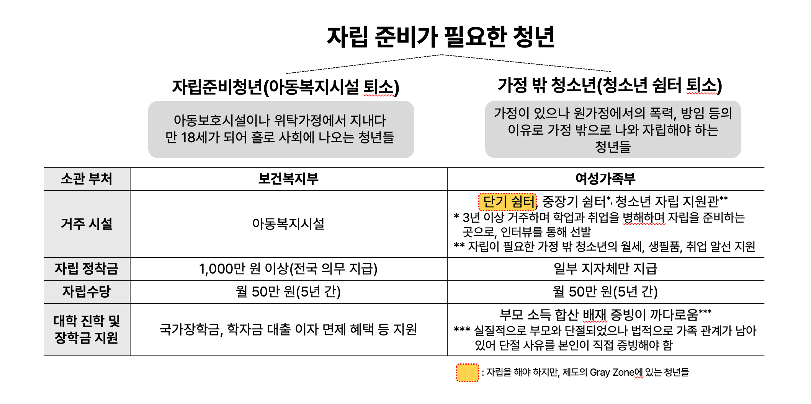
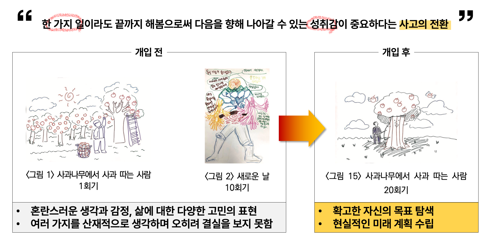

가정 밖에 놓인 청년이, 스스로의 삶을 마주할 힘을 되찾기까지
가정 밖으로 나온 청년에게 사회가 건네는 것은 대개 '거처'와 '직업'이었습니다. 그러나 정작 이들이 직업을 유지하는 등 삶을 다시 세우지 못하는 이유는, 무너진 마음에 대한 회복이 함께 이루어지지 못함에 있었습니다.
원가정의 폭력과 방임 등의 다양한 이유로 집을 나온 청년들은 취업·현물 중심의 지원을 받고도 자립의 문턱에서 되돌아서곤 했습니다. 오랜 방임으로 누적된 심리적 무기력과, 실패를 자기 탓으로 돌리는 비관적 설명 양식이 남아 있는 한, 어떤 지원도 오래 작동하지 못했기 때문입니다.
저는 여기서 진짜 문제를 다시 물었습니다. "왜 경제적 지원을 받고도 청년들은 현장에서 중도에 이탈하는가?" 표면의 결핍이 아니라, 그 아래에서 삶을 스스로 조절할 힘, 즉 자립의 심리적 토대가 비어 있다는 것이 제가 내린 진단이었습니다.

첫 가설은 단순했습니다. "심리적 개입이 이루어지면 자립 의지가 생길 것이다." 선행연구도 가정 밖 청년이 필요로 하는 지원의 우선순위에 심리적 지원이 있음을 뒷받침했습니다. 그러나 현장은 가설대로 움직이지 않았습니다.
청년마다 집을 나온 배경(폭력·방임 등)이 달랐고, 부모와의 단절 정도도, 자립을 바라보는 절박함의 크기도 모두 제각각이었습니다. 같은 '심리적 개입'이 누구에게도 똑같이 작동하지 않았습니다. 저는 이 어긋남을 실패가 아니라, 문제를 다시 정의하라는 현장의 신호로 읽었습니다.
막연한 정서 지원만으로는 자립 의지가 생기지 않았습니다. 청년에게 정작 필요한 건 '자신의 삶을 끝까지 책임질 수 있다'는 자기 믿음과 유사 경험의 축적이었습니다.
긍정심리학의 낙관성 이론을 접목해, 실패를 스스로 반박하고 재해석하는 인지 기술을 기르는 방향으로 프로그램을 다시 설계했습니다. 막연한 위로가 아니라 '훈련 가능한 역량'으로 목표를 바꾼 것입니다.
한 참여자가 프로그램을 중도 이탈하려 할 때, 억지로 붙잡는 대신 '언제든 돌아올 수 있는 관계망'이 있음을 인지시켰습니다. 통제가 아니라 선택을 존중하는 방식으로, 대상자를 지원의 대상이 아닌 결정의 주체로 대했습니다.
물감·휴지·석고처럼 방어를 낮추는 재료로 억눌린 감정을 안전하게 꺼내게 하고, 그 과정의 행동·언어·작품을 모두 기록해 반복적 비교분석법으로 축적했습니다. 이를 통해 대상자의 변화를 데이터화하여 추적하였습니다.
이 프로젝트에서 대상자의 변화는 말이 아니라 그림으로 먼저 드러났습니다.
회기가 쌓일수록 작품 속 상징을 불안에서 자기 이해와 성취로 옮겨갔습니다.

무엇을 원하는지 모른 채 여러 일을 벌이며 안절부절못하던 시기. 성과는 갈망하지만 방법은 모르는, 소진된 자신을 마주했습니다.
회피해 왔던 아버지에 대한 분노, 두고 온 동생에 대한 죄책감을 처음으로 직면하고 표현했습니다. 무기력했던 그때의 자신을 인정하면서 마음은 한결 가벼워졌습니다.
파고 있던 '우물'이 너무 많았음을 스스로 깨닫고, 무엇에 집중할지 선택했습니다. "설령 원하던 보물이 아니어도, 끝까지 해냈다면 실패가 아니다"라는 인지 전환에 도달했습니다.
비현실적인 도피 계획 대신 한국에서의 현실적 미래를 설계하기 시작했고, 단절했던 어머니와의 관계를 먼저 복원해 자립의 자원으로 삼았습니다. 대학 진학의 꿈과 경제활동을 병행하며, 자립 계획을 세운 뒤 쉼터를 퇴소했습니다.
이 프로젝트는 한 청년의 깊은 변화를 이끌었지만, 그만큼 개별 밀착 사례였다는 한계도 분명했습니다. 다음 단계는 이 깊이를 잃지 않으면서 더 많은 청년에게 닿을 수 있는 구조를 만드는 것입니다.
한 사람에게 통한 20회기 설계를 참여자 특성별로 모듈화해, 배경·연령이 다른 청년에게도 조정 적용할 수 있는 프로그램 체계로 발전시킵니다.
퇴소 시점에 종료되던 개입을, 자립 이후의 적응까지 추적하는 장기 설계로 확장해 변화의 지속성을 검증합니다.
실제로 졸업 후 모교를 쉼터의 실습처로 연계하고 후속 치료사를 교육해, 제가 떠난 뒤에도 개입이 이어지는 구조를 남겼습니다. 이 순환을 제도화하는 것이 다음 과제입니다.
'가출·비행'이라는 편견에 가린 가정 밖 청년의 서사와 축적한 데이터를 근거로 사회 인식을 바꾸는 콘텐츠로 확장합니다.
한 번의 개입으로 끝나지 않도록,
스스로 삶을 성장시키고 나아갈 수 있는 힘을 갖게 하는 경험을 제공하는 것.
그것이 제가 정의하는 자립 지원입니다.
본 프로젝트는 석사 학위연구를 바탕으로 KCI 등재 학술지에 게재되었습니다.
정은채·한경아 (2019). 자립을 준비하는 쉼터 거주 청소년의 낙관성을 위한 미술치료 질적 사례 연구. 『조형교육』 71집.
* 대상자 보호를 위해 사례의 세부 정보는 익명·각색 처리되었습니다.